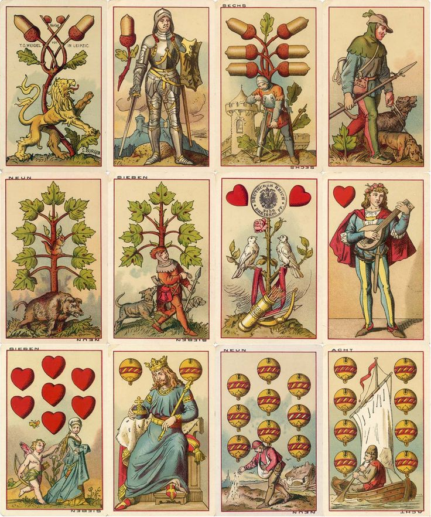

Cărți din Franța
Cărțile de joc franceze folosesc simbolurile: trèfles (♣), carreaux (♦), cœurs (♥) și piques (♠). Un pachet standard are 52 de cărți.

Cărți latine
Cărțile latine sunt împărțite în monede, bâte, cupe și săbii. Ele au fost adoptate din cărțile importate din Egiptul mameluc și Granada maură.

Cărțile nemțești
Elvețienii/germanii și-au dezvoltat propriile simboluri: scuturi, trandafiri, ghinde și clopoței, ulterior înlocuite cu inimi și frunze.